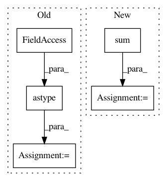

6704c535b8c59ab3b9b98c0489a051654c1ee727,nisl/signals.py,,_standardize,#Any#Any#Any#,12
Before Change
=======
std_signals: copy of signals, normalized.
signals = np.array(signals).astype(np.float)
buf = signals.T
buf -= signals.mean(axis=-1)
if normalize:
length = float(signals.shape[-1])
std = np.sqrt(length) * signals.std(axis=-1).T
std[std < np.finfo(np.float).eps] = 1
buf /= std
return signals
After Change
if not detrend:
signals -= signals.mean(axis=0)
std = np.sqrt((signals ** 2).sum(axis=0))
std[std < np.finfo(np.float).eps] = 1. // avoid numerical problems
signals /= std
return signals
In pattern: SUPERPATTERN
Frequency: 3
Non-data size: 5
Instances
Project Name: nilearn/nilearn
Commit Name: 6704c535b8c59ab3b9b98c0489a051654c1ee727
Time: 2013-04-05
Author: philippe.gervais@inria.fr
File Name: nisl/signals.py
Class Name:
Method Name: _standardize
Project Name: craffel/mir_eval
Commit Name: ac94d1ce59c97a1bc9217daf7d20d3d5220dad42
Time: 2020-04-06
Author: rmb456@nyu.edu
File Name: mir_eval/melody.py
Class Name:
Method Name: raw_chroma_accuracy
Project Name: deeptools/HiCExplorer
Commit Name: e8a8edec508fcf886d5c6329ff0729b1cff845e8
Time: 2018-09-04
Author: wolffj@informatik.uni-freiburg.de
File Name: hicexplorer/utilities.py
Class Name:
Method Name: exp_obs_matrix_norm